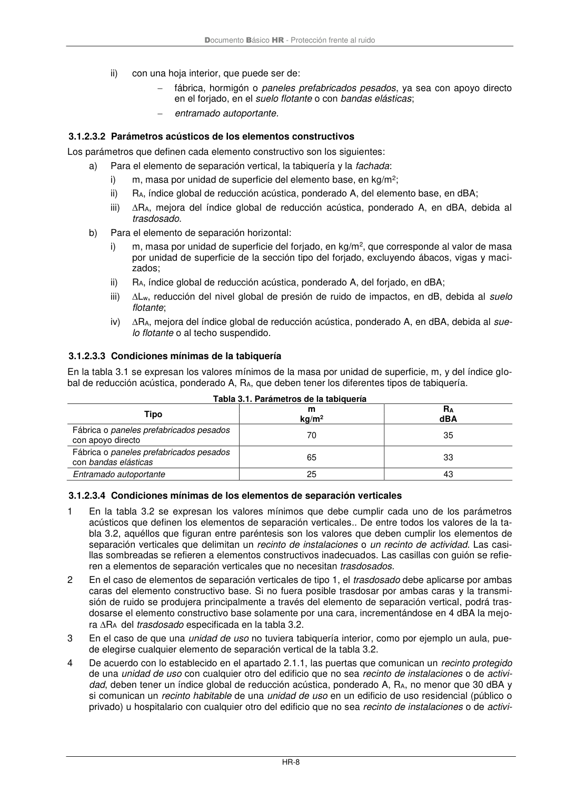

DB-HR · Página 14 · versión 2019-12-20
SHA256: a67baeca5138bb1f121f797d23a79a4557bd9ac4abacd954024893e05411eeab · página física 14 de 80 · métodos de encabezado
solo si están cotejados.
Formatos: Markdown · JSON de bloques · PDF p. 14 · imagen PNG
Documento Básico HR - Protección frente al ruido HR-8 ii) con una hoja interior, que puede ser de: − fábrica, hormigón o paneles prefabricados pesados, ya sea con apoyo directo en el forjado, en el suelo flotante o con bandas elásticas; − entramado autoportante. 3.1.2.3.2 Parámetros acústicos de los elementos constructivos Los parámetros que definen cada elemento constructivo son los siguientes: a) Para el elemento de separación vertical, la tabiquería y la fachada: i) m, masa por unidad de superficie del elemento base, en kg/m2; ii) RA, índice global de reducción acústica, ponderado A, del elemento base, en dBA; iii) RA, mejora del índice global de reducción acústica, ponderado A, en dBA, debida al trasdosado. b) Para el elemento de separación horizontal: i) m, masa por unidad de superficie del forjado, en kg/m2, que corresponde al valor de masa por unidad de superficie de la sección tipo del forjado, excluyendo ábacos, vigas y maci- zados; ii) RA, índice global de reducción acústica, ponderado A, del forjado, en dBA; iii) Lw, reducción del nivel global de presión de ruido de impactos, en dB, debida al suelo flotante; iv) RA, mejora del índice global de reducción acústica, ponderado A, en dBA, debida al sue- lo flotante o al techo suspendido. 3.1.2.3.3 Condiciones mínimas de la tabiquería En la tabla 3.1 se expresan los valores mínimos de la masa por unidad de superficie, m, y del índice glo- bal de reducción acústica, ponderado A, RA, que deben tener los diferentes tipos de tabiquería. Tabla 3.1. Parámetros de la tabiquería Tipo m RA kg/m2 dBA Fábrica o paneles prefabricados pesados con apoyo directo 70 35 Fábrica o paneles prefabricados pesados con bandas elásticas 65 33 Entramado autoportante 25 43 3.1.2.3.4 Condiciones mínimas de los elementos de separación verticales 1 En la tabla 3.2 se expresan los valores mínimos que debe cumplir cada uno de los parámetros acústicos que definen los elementos de separación verticales.. De entre todos los valores de la ta- bla 3.2, aquéllos que figuran entre paréntesis son los valores que deben cumplir los elementos de separación verticales que delimitan un recinto de instalaciones o un recinto de actividad. Las casi- llas sombreadas se refieren a elementos constructivos inadecuados. Las casillas con guión se refie- ren a elementos de separación verticales que no necesitan trasdosados. 2 En el caso de elementos de separación verticales de tipo 1, el trasdosado debe aplicarse por ambas caras del elemento constructivo base. Si no fuera posible trasdosar por ambas caras y la transmi- sión de ruido se produjera principalmente a través del elemento de separación vertical, podrá tras- dosarse el elemento constructivo base solamente por una cara, incrementándose en 4 dBA la mejo- ra RA del trasdosado especificada en la tabla 3.2. 3 En el caso de que una unidad de uso no tuviera tabiquería interior, como por ejemplo un aula, pue- de elegirse cualquier elemento de separación vertical de la tabla 3.2. 4 De acuerdo con lo establecido en el apartado 2.1.1, las puertas que comunican un recinto protegido de una unidad de uso con cualquier otro del edificio que no sea recinto de instalaciones o de activi- dad, deben tener un índice global de reducción acústica, ponderado A, RA, no menor que 30 dBA y si comunican un recinto habitable de una unidad de uso en un edificio de uso residencial (público o privado) u hospitalario con cualquier otro del edificio que no sea recinto de instalaciones o de activi-
